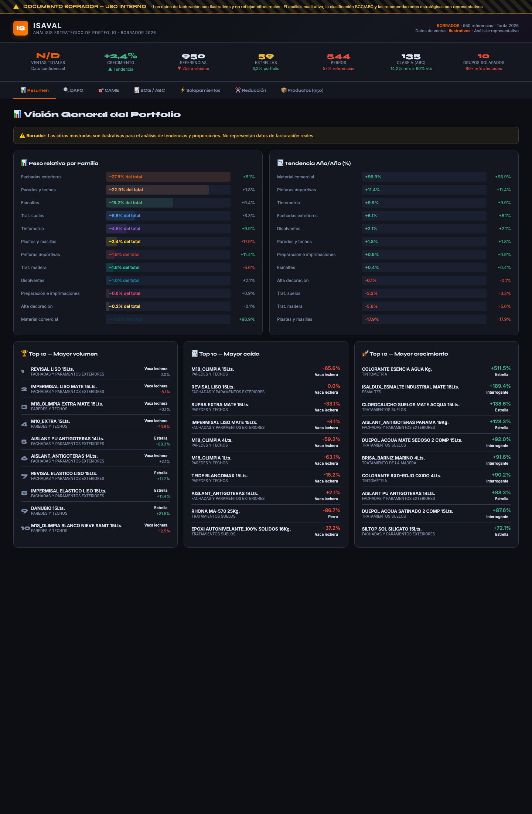

Del catálogo hipertrofiado al portfolio con criterio
Autor: Iván Morales
Idea central: construir una herramienta capaz de analizar técnica, precio, penetración y rendimiento comercial de cada referencia para detectar solapamientos, canibalización y oportunidades reales de simplificación del portfolio.
El objetivo no es solo reducir referencias. Es ordenar el catálogo para que cada producto tenga un posicionamiento claro y la compañía pueda decidir con más criterio económico, técnico y estratégico.
El problema
Tras años de crecimiento y acumulación de referencias, el catálogo de la compañía se ha vuelto demasiado extenso. Según plantea Iván, esto genera zonas de solapamiento donde varios productos compiten entre sí sin una diferenciación suficientemente clara ni en prestaciones, ni en precio, ni en canal. El resultado probable es complejidad interna, ineficiencia comercial y canibalización.
Qué propone la píldora
La propuesta consiste en desarrollar una herramienta de análisis del portfolio que cruce datos de ventas, información técnica y criterios definidos por la empresa para obtener una lectura mucho más clara del catálogo.
Diagnóstico
Identificar productos solapados, huecos de posicionamiento y posibles incoherencias entre gama, canal y precio.
Decisión
Aportar criterios para decidir qué mantener, qué revisar y qué racionalizar sin poner en riesgo una parte relevante de la facturación.
Velocidad
Reducir drásticamente el tiempo de análisis frente a una revisión manual del catálogo referencia por referencia.
Escalabilidad
Preparar una base conectable a otros análisis de márgenes y rentabilidad que ya están en marcha dentro de la compañía.
Por qué la IA encaja aquí
La IA no sustituye el criterio de negocio. Lo acelera. En este caso permitiría analizar grandes volúmenes de datos guiados por premisas definidas por la empresa y devolver una representación visual mucho más útil para detectar problemas y oportunidades dentro del catálogo.
Su valor está en hacer viable un análisis que manualmente sería lento, disperso y difícil de sostener en el tiempo.

Borrador visual del panel de análisis de portfolio aportado por Iván Morales como referencia inicial de la herramienta.
Lectura de fondo
La pieza apunta a un problema estructural y muy relevante: cuando un catálogo crece sin una lectura periódica rigurosa, la compañía puede acabar sosteniendo complejidad que no siempre aporta valor proporcional. Esta propuesta busca convertir esa revisión en una capacidad analítica recurrente, no en un ejercicio puntual.
Conclusión preliminar: la oportunidad está en pasar de un catálogo amplio pero difícil de gobernar a un portfolio mucho más inteligible, donde técnica, ventas, precio y rentabilidad puedan leerse de forma integrada para tomar decisiones con criterio.